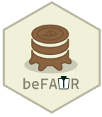

Adding a study
K.A. Stam
2026-11-13
Source:vignettes/adding_a_study.Rmd
adding_a_study.Rmd
library(beFAIR)
## TODO
# comments from myself
# order should be:
# 1. Show addStudy function first
# 2. show necessary scripts
# 3. show how to change the template.yamlThe Study pillar
In this vignette you will learn how to add a study to a FAIRground,
how to draft and fill-in the relevant codebooks that reside in the the
study pillar. This pillar is the first foundation of
every FAIRground, it holds the clinical trial or cohort study itself:
who participated, when events occurred, and how the study was designed.
For example, Within the participant table you can find
variables like age and BMI and the
studydesign table can be used to look-up when a participant
got immunized or treated. For more information on the various codebooks,
check the Codebookreference.
To follow along, we’ll first set up a dummy fairpoint project and explore the structure of a FAIRground.
# Create a FAIRground
myDir <- paste0(tempdir(), "/dummy_beFAIR")
startProject(dir = myDir, dummy=TRUE)
# Inspect the created beFAIR
cat(normalizePath(myDir, dummy_beFAIR.proj), "\n")
# Open your newly generated project
rstudioapi::openProject(paste0(myDir, "/dummy_beFAIR.proj") newSession = TRUE)Each study lives in its own sub-folder under studies/
and its data are described by a minimum of four standard codebooks,
id_mapping, participant, studyarm
and studydesign
Create a project and connect a database
Before adding a study, initialise a FAIRground directory with
startProject().
beFAIR stores all data in a SQL database. For this walkthrough we use
SQLite — no server required, just a single file on
disk. Call FAIRgroundConnect() with the RSQLite driver,
then databaseInitialize() to create the two core registry
tables (table_script and table_codebook):
FAIRgroundConnect(drv = RSQLite::SQLite(), dsn = "fairpoint.sqlite")
# databaseInitialize()In production: replace the SQLite driver with your ODBC Data Source Name:
FAIRgroundConnect(dsn = "MY_PROJECT_DSN")
AddStudy()
Use addStudy() to register a new study. Two arguments
are required:
-
study_name— unique human-readable name, used as the directory name -
study_id— exactly five alphanumeric characters, used as the prefix when generating anonymisedparticipant_idvalues
Optionally pass a registration_code (ClinicalTrials.gov
NCT number) to auto-populate study metadata.
# addStudy(study_name = "CoHSI1", study_id = "CHSI1")Folder structure
addStudy() creates the following layout under
studies/CoHSI1/:
# list.files("studies/CoHSI1", recursive = TRUE)-
meta.yaml— study-level metadata to fill in -
data/— YAML files pointing to your raw data sources -
scripts/— one auto-generated ETL script per codebook
meta.yaml
The meta.yaml file is initialised with the values you
passed to addStudy(). Open it and fill in the remaining
fields before running databaseUpdate().
Fields to complete:
| Field | Description | Example |
|---|---|---|
study_organism |
Organism studied | Homo sapiens |
disease |
Disease under investigation | malaria |
pathogen |
Causative pathogen | Plasmodium falciparum |
registration_code |
ClinicalTrials.gov NCT number | NCT02237586 |
ETL scripts
| Codebook | Table | Description |
|---|---|---|
id_mapping |
id_mapping | Links each raw source identifier to an anonymised
participant_id
|
participant |
participant | One row per participant; demographics and enrollment metadata |
studyarm |
studyarm | One row per study arm; describes the intervention groups within a study |
studydesign |
studydesign | One row per event per study arm; the trial timeline |
Four ETL scripts are drafted automatically, one per codebook:
# list.files("studies/CoHSI1/scripts")Each script follows the same structure:
-
Dependencies — load the study
meta.yamland extract thestudy_id - Load raw data — read your source files (you write this)
- Data preparation — clean and reshape (you write this)
-
DATABOOK — create the empty
databookviacodebookToEntries() - DATA — populate each field (you write this)
- Validate — check the data against the codebook rules
-
Clean environment — keep only
databook
The sections marked !! write code !! are the ones you
need to complete.
id_mapping.R
The id_mapping script is the entry
point for every study. It maps each raw source
identifier from your clinical database to a stable, anonymised
participant_id. beFAIR generates the
participant_id automatically during
databaseUpdate() by SHA-256 hashing
"<study_id>_<NNNN>" (zero-padded
participant_nr) and taking the first six hex
characters.
Your task is to produce a row per source identifier with:
-
participant_nr— a sequential integer assigned to each unique individual -
source_id— the original identifier from the source system
Multiple source_id values can share the same
participant_nr when a participant appears under different
IDs across data sources.
Example — completed DATA section:
# participant_nr
databook$data$participant_nr <- as.integer(rawData$participant_nr)
# source_id
databook$data$source_id <- rawData$DonorID
# study_id
databook$data$study_id <- studyIDNote — reserved source IDs: The values
"BLANK","STD","NEG_CTRL", and"POS_CTRL"are treated as control or blank sample labels and are never entered inid_mapping. WhencheckSourceIdExist()validates downstream tables (e.g. experiment or analysis data) it automatically skips these identifiers, so they will not raise a missing-ID warning even if they appear assource_idvalues in those scripts.
participant.R
The participant script captures one row per
participant with demographic and enrolment information. The
participant_id here must match the values generated by the
id_mapping script — this link is established automatically
by databaseUpdate().
Key fields to populate from your raw data:
| Field | Type | Example |
|---|---|---|
source_id |
character | "VOL-001" |
study_id |
character | "CHSI1" |
study_name |
character | "CoHSI1" |
studyarm_id |
character | "CHSI1_vaccine" |
age |
numeric | 32 |
sex |
character |
"M" or "F"
|
height |
numeric |
178 (cm) |
weight |
numeric |
75 (kg) |
reference_date |
character | "2021-03-01" |
Example — completed DATA section:
# source_id
databook$data$source_id <- rawData$DonorID
# study_id
databook$data$study_id <- studyID
# study_name
databook$data$study_name <- metaInfo$name
# studyarm_id
databook$data$studyarm_id <- paste0(studyID, "_", rawData$Group)
# age
databook$data$age <- as.numeric(rawData$Age)
# sex
databook$data$sex <- ifelse(rawData$Gender == "Male", "M", "F")
# height
databook$data$height <- as.numeric(rawData$Height_cm)
# weight
databook$data$weight <- as.numeric(rawData$Weight_kg)
# reference_date
databook$data$reference_date <- format(as.Date(rawData$EnrolmentDate), "%Y-%m-%d")studyarm.R
The studyarm script describes the intervention
groups in the study. Each arm gets one row. The
studyarm_id is the foreign key that links participants (via
participant.studyarm_id) to their arm.
Convention for studyarm_id:
<study_id>_<arm_label>
(e.g. CHSI1_vaccine).
Example — completed DATA section for a two-arm study:
# studyarm_id
databook$data$studyarm_id <- c("CHSI1_vaccine", "CHSI1_placebo")
# study_id
databook$data$study_id <- c(studyID, studyID)
# studyarm_name
databook$data$studyarm_name <- c("Vaccine group", "Placebo group")
# studyarm_description
databook$data$studyarm_description <- c(
"Participants receiving PfSPZ Vaccine at 9e5 SPZ",
"Participants receiving normal saline placebo"
)studydesign.R
The studydesign script encodes the scheduled
events in the trial timeline, with one row per event per arm.
Together with studyarm, it gives a complete picture of what
happened to each group and when. Timepoints are expressed as days
relative to the reference date (day 0 = first intervention).
Example — completed DATA section for a vaccination + challenge trial:
arms <- c("CHSI1_vaccine", "CHSI1_vaccine", "CHSI1_vaccine", "CHSI1_placebo")
n <- length(arms)
# studyarm_id
databook$data$studyarm_id <- arms
# study_id
databook$data$study_id <- rep(studyID, n)
# timepoint (days from reference date)
databook$data$timepoint <- c(0L, 28L, 56L, 0L)
# event_type
databook$data$event_type <- c("vaccination", "vaccination", "challenge", "placebo")
# event_name
databook$data$event_name <- c("Prime", "Boost", "CHMI", "Placebo injection")
# product_name
databook$data$product_name <- c("PfSPZ Vaccine", "PfSPZ Vaccine", "PfSPZ Challenge", "Normal saline")
# dose
databook$data$dose <- c(9e5, 9e5, 3.2e3, NA_real_)
# dose_unit
databook$data$dose_unit <- c("SPZ", "SPZ", "SPZ", NA_character_)